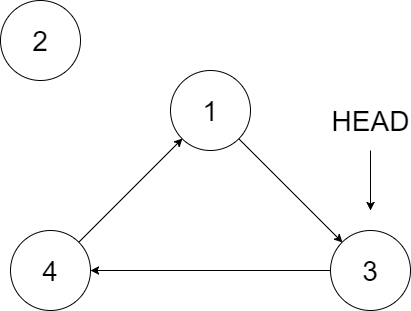
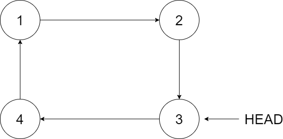

Insert into a Cyclic Sorted List
循环有序列表插值
Given a node from a cyclic linked list which is sorted in ascending order, write a function to insert a value into the list such that it remains a cyclic sorted list. The given node can be a reference to any single node in the list, and may not be necessarily the smallest value in the cyclic list.
If there are multiple suitable places for insertion, you may choose any place to insert the new value. After the insertion, the cyclic list should remain sorted.
If the list is empty (i.e., given node is null), you should create a new single cyclic list and return the reference to that single node. Otherwise, you should return the original given node.
The following example may help you understand the problem better:

In the figure above, there is a cyclic sorted list of three elements. You are given a reference to the node with value 3, and we need to insert 2 into the list.

The new node should insert between node 1 and node 3. After the insertion, the list should look like this, and we should still return node 3.
1 | const insert = function(head, insertVal) { |